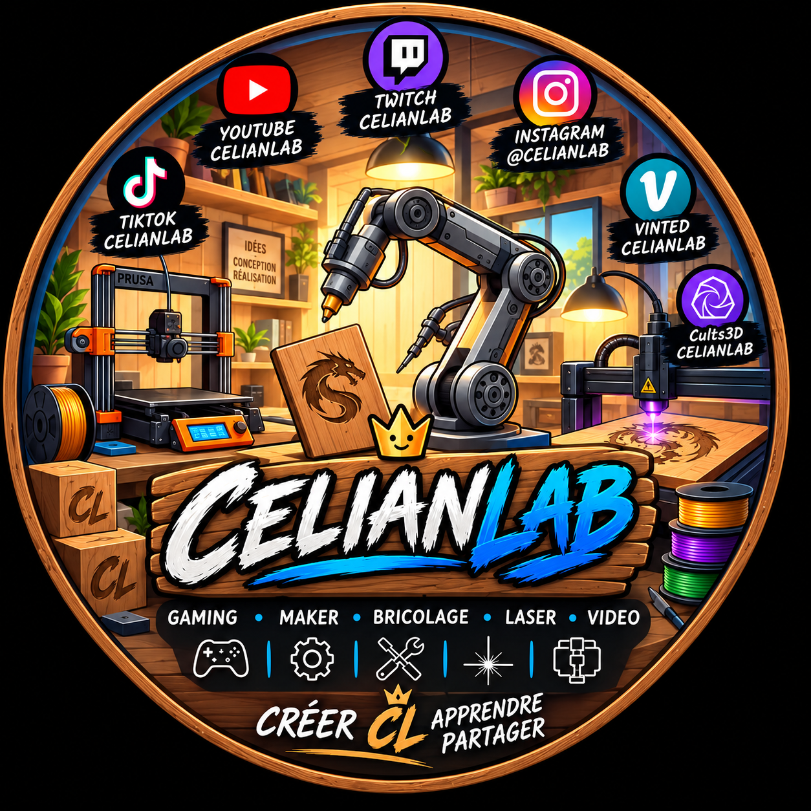

<section id="maker">
    <div class="container split">

        <div class="visual-card">
            
            <div class="big-word">MAKER</div>
        </div>

        <div>

            <div class="eyebrow">02 · MAKER</div>

            <h2>Des idées qui sortent de l'écran.</h2>

            <p class="section-intro">
                Même si le contenu digital prend une place importante,
                CelianLab reste aussi un espace pour fabriquer, tester
                et expérimenter.
            </p>

            <div class="list">

                <div class="list-item">
                    <strong>Laser</strong>
                    <span>Gravure, découpe et créations.</span>
                </div>

                <div class="list-item">
                    <strong>DIY</strong>
                    <span>Bricolage et fabrication.</span>
                </div>

                <div class="list-item">
                    <strong>Tests</strong>
                    <span>Expériences, idées et prototypes.</span>
                </div>

                <div class="list-item">
                    <strong>Créations</strong>
                    <span>Des projets imaginés puis réalisés.</span>
                </div>

            </div>

        </div>

    </div>
</section>
